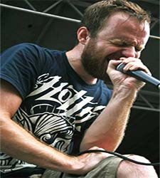
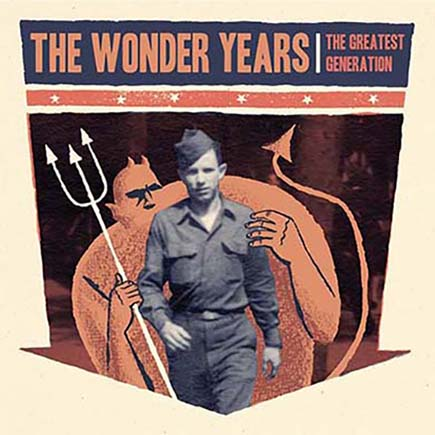

Started as a joke in the heart Pennsylvania that slowly snowballed out of control, The Wonder Years began writing music together in 2005. Once the joke settled and the group realized they could play music like they always wanted, small shows and self promoting lead to more and more opportunities. They now have 5 full length studio albums, countless EPs and special appearances, and have been making headlines and headway in the Punk Rock genre for over 10 years.(Sources)

Dan Campbell - Lead Vocals
Matt Brasch - Lead Guitar, Backup Vocals
Casey Cavaliere - Rhythm Guitar, Vocals
Mike Kennedy - Drums, Percussion
Nick Steinborn - Guitar, Keyboards, Piano, Vocals
Get Stoked On It! - October 30, 2007
Keystone State Dude-Core
Bout to get Fruit Punched, Homie
Buzz Aldrin: The Poster Boy for Second
Let's Moshercise!!!
What if we (swam) into Nothing?
Racing Trains
Zombies are the New Black
We Were Giants
My Geraldine Lies Over The Delaware
Dude, What's a Land Pirate
I Fell in Love with a Ninja Warrior
When Keeping it Real Goes Wrong
The Upsides - January 23, 2010
My Last Semester
Logan Circle
Everything I Own Fits In This Backpack
Dynamite Shovel
New Years with Carl Weathers
It's Never Sunny in South Philadelphia
Hostels & Brothels
Melrose Diner
This Party Sucks
Hey Thanks
Washington Square Park
All My Friends Are In Bar Bands
Back To Top
Suburbia I've Given You All And Now I'm Nothing - June 14, 2011
Came Out Swinging
Woke Up Older
Local Man Ruins Everything
Suburbia
My Life As A Pigeon
Summers in PA
I Won't Say The Lords Prayer
Coffee Eyes
I've Given You All
Don't Let Me Cave In
You Made Me Want To Be A Saint
Hoodie Weather
And Now I'm Nothing
The Greatest Generation - May 14, 2013

There, There
Passing Through a Screen Door
We Could Die Like This
Dismantling Summer
The Bastards, The Vultures, and The Wolves
The Devil In My Bloodstream
Teenage Parents
Chaser
An American Religion(FSF)
A Raindance in Traffic
Madelyn
Cul-De-Sac
I Just Want to Sell Out My Funeral
No Closer To Heaven - September 4, 2015
Brothers&
Cadinals
A Song for Patsy Cline
I Don't Like Who I Was Then
Cigarettes & Saints
The Bluest Things on Earth
Thanks for the Ride
Stained Glass Ceilings
I Wanted So Badly to be Brave
You in January
Palm Reader
No Closer To Heaven
Slow Dancing with San Andreas*
Palm Reader (alternate version)*